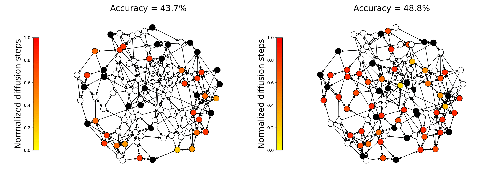
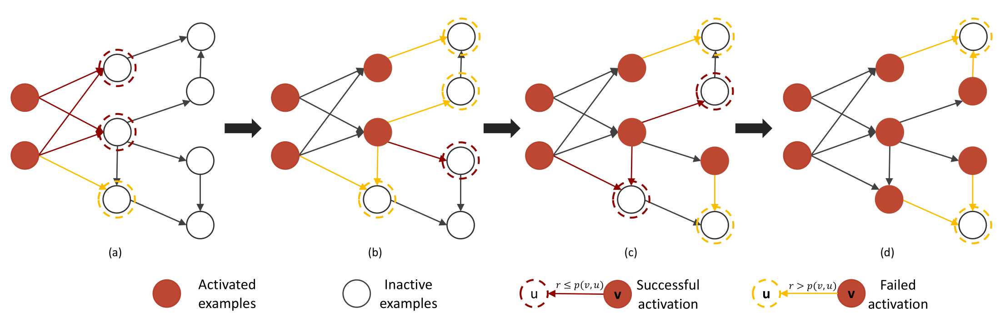
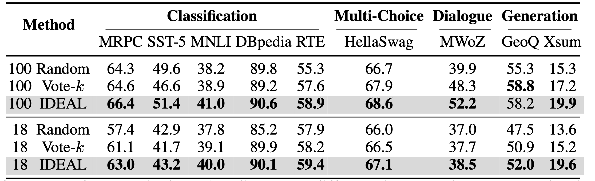
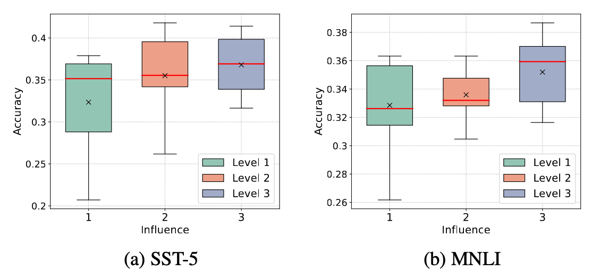

In-Context learning is a promising paradigm that utilizes In-Context examples as prompts for the predictions of large language models. These prompts are crucial for achieving strong performance. However, since the prompts need to be sampled from a large volume of annotated examples, finding the right prompt may result in high annotation costs. To address this challenge, this paper introduces an influence-driven selective annotation method that aims to minimize annotation costs while improving the quality of In-Context examples.
The essence of our method is to select a pivotal subset from a large-scale unlabeled data pool to annotate for the subsequent sampling of prompts. Specifically, a directed graph is first constructed to represent unlabeled data. Afterward, the influence of candidate unlabeled subsets is quantified with a diffusion process. A simple yet effective greedy algorithm for unlabeled data selection is lastly introduced. It iteratively selects the data if it provides a maximum marginal gain with respect to quantified influence.
Compared with previous efforts on selective annotations, our influence-driven method works in an end-to-end manner, avoids an intractable explicit balance between data diversity and representativeness, and enjoys theoretical support. Experiments confirm the superiority of the proposed method on various benchmarks, achieving better performance under lower time consumption during subset selection.
Visualization of the information diffusion process of two subsets with equal sizes for SST-5 datasets. We can observe that: the subset with high influence can achieve better performance by influencing a larger group of examples in the unlabeled data pool compared to the subset with low influence.
Based on this, we then propose to quantify the influence of each candidate unlabeled subset in the constructed graph, through a classic independent-cascade diffusion mode.
The procedure aims to quantify the influence of each subset of In-Context examples. In this procedure, we start with a subset of examples (the red points in (a)). Gradually, the successors of this subset are activated based on the edge weight and a random number sampled from 0 to 1. From (a) to (d). The influence of the subset is determined by the number of points that have been activated.
The performance of our method and baselines on 9 different datasets with an annotation budget of 100 and 18. We use similar-based prompt retrieval for all methods and report the average results with 3 different runs for each method. We can observe that our method works better than Random and Vote-k in almost all cases (17/18) under two annotation budgets. The best result in each case is bolded.

We also conduct experiments to investigate the correlation between subset influence and its corresponding In-Context learning performance. Specifically, we randomly select a collection of example subsets from a large unlabeled data pool. We then evaluate each subset as a prompt and record its performance and influence in the constructed graph, resulting in a set of influence performance pairs. We visualize the performance of subsets in each influence level. Our analysis reveals that subsets with larger influence levels could achieve better performance.

@article{zhang2023ide,
title={IDEAL: Influence-Driven Selective Annotations Empower In-Context Learners in Large Language Models},
author={Zhang, Shaokun and Xia, Xiaobo and Wang, Zhaoqing and Chen, Ling-Hao and Liu, Jiale and Wu, Qingyun and Liu, Tongliang},
journal={arXiv preprint arXiv:2310.10873},
year={2023}
}